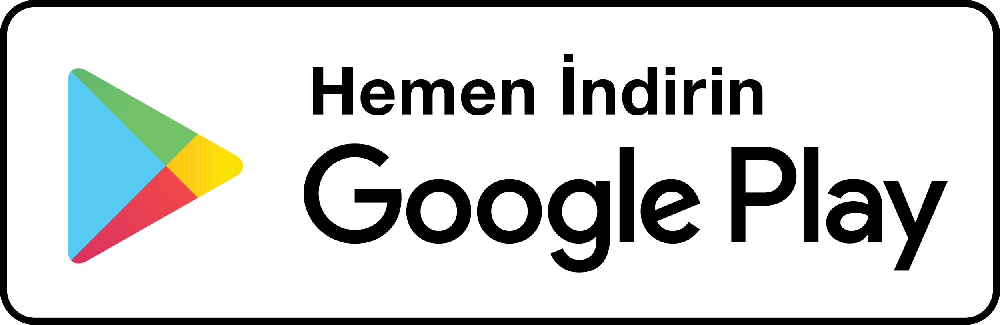

Something happened to our society.
You used to speak freely on any topic. Other people might disagree, and it could be a heated argument. But that was the thrill.
And now society has become irreconcilable.
People are afraid to share an opinion. Whatever the topic — sports, relationships, or economics — the audience's reaction can be surprisingly cruel. One careless word and you can be bullied, canceled, or fired from your job.
Top social networks don't help you. They urge you to act under your real name, but then block you for any "wrong" word. If you create another, maybe anonymous, account, you'll have to build an audience from scratch. In the end, to stay safe, you need to avoid expressing yourself altogether.
We think it's time to change that. Yes, we can hardly transform our society, but we can provide a safe environment for speaking out.
Imagine, if you could talk to the same audience under different identities!
You could post a controversial opinion under a pseudonym, and develop your online presence under your main, probably real, identity.
When acting under a pseudonym, your followers would learn your opinion, but wouldn't know it's yours. Any inappropriate reaction would be directed at the pseudonym, not at you. And you wouldn't need to build a new audience for that.
Introducing Kroko, a multi-identity social network.
- One audience. Multiple identities.
- Publish under your account name or a pseudonym.
- Protect your real identity from hatred, bullying, and your employer.
- Feel safe to speak your mind.
Kroko has all the features you'll need: share photos, videos, and texts; comment posts; follow interesting people and get followed yourself; exchange instant messages, etc.
Get free to express yourself: Download the Kroko app now!
